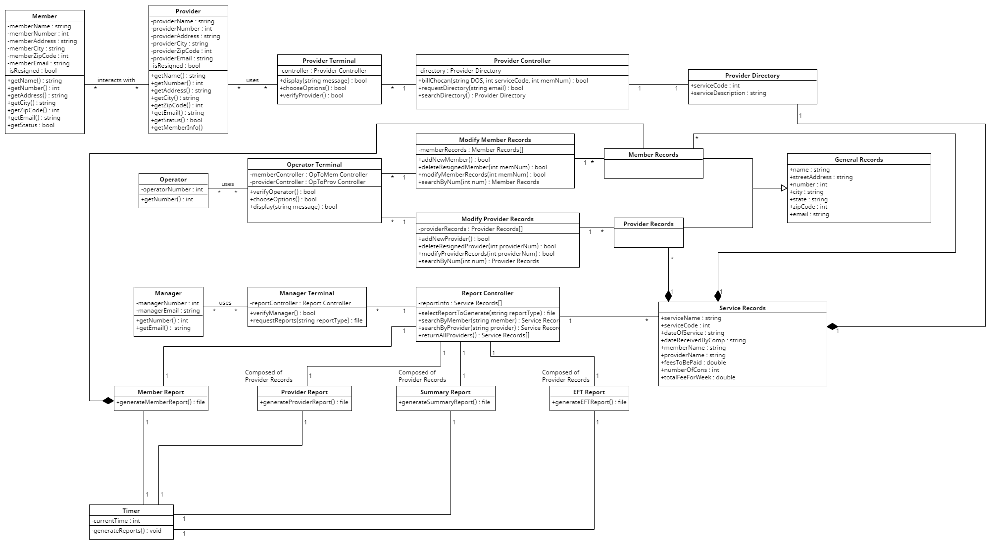

Team 18 Project 3 Report
Header table
| Names |
Hours |
| Cindy Qiu |
5 |
| Sandy Zheng |
5 |
| Zach Michaels |
5 |
| Quinncy Gunnerson |
5 |
| Jaylon Sanders |
5 |
| Tyler Coleman |
5 |
Task Distribution Table
| Name |
Task Performed |
Percent Contribution |
| Cindy Qiu |
Class Diagram, Sequence Diagrams, Corrections |
16.66% |
| Sandy Zheng |
Class Diagram, Sequence Diagrams, Corrections |
16.66% |
| Zachary Michaels |
Submitter, Sequence Diagrams, Report.html |
16.66% |
| Jaylon Sanders |
Class Diagram, Corrections, Sequence Diagrams |
16.66% |
| Quincy Gunnerson |
Cass Diagram, Sequence Diagrams |
16.66% |
| Tyler Coleman |
Class Diagram, Sequence Diagrams |
16.66% |
Class Diagram

Discussion of our design
In our class design, we use cohesion and coupling for an effective and logical class. We use cohesion as needed, like with our provider, operator, and manager terminals as their classes contain unique functions that only they can access. This will help us avoid errors of users trying to access data they don’t have. But, we also use coupling to reduce complexity of our class for shared functions. For example, the service records class is used by the provider directory, member records and provider records classes but it’s functions/data storage are all supportive of said classes without bugs. Because of this coupling, the report controller can pull data straight from service records instead of pulling data from multiple classes. So our design is “good” by keeping data that is unique by itself in its own class(cohesion) to avoid data errors while sharing data(coupling) to reduce complexity.
BitBucket Stats